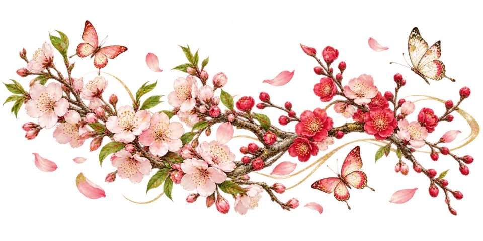
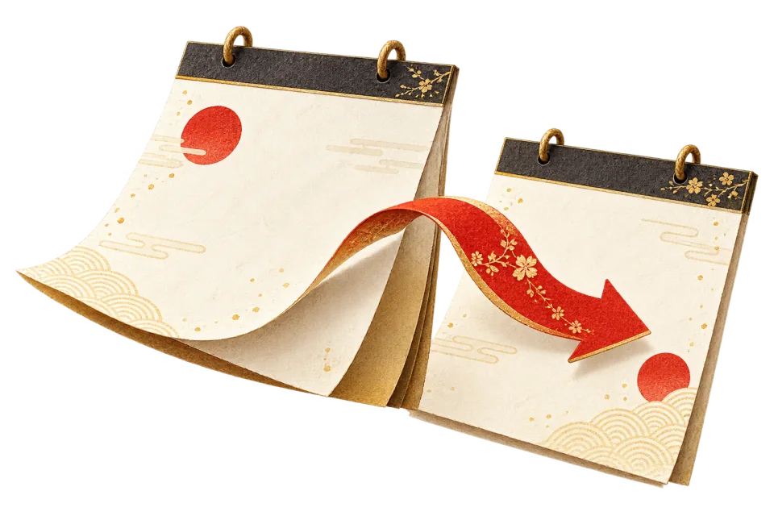

LOCAL REVIEW · OSAKA / KANSAI
日本紅日子與盂蘭盆節
卡片顯示各節日的原創主視覺；點選任一項目即可查看完整網頁與動態效果。日期優先使用日本內閣府官方清單；每週自動同步新年份，尚未公布的未來年份才使用現行法律規則暫算。法定「休日」與「國民の祝日」分開標示。
本機驗收 · 尚未發布
日本の国民の祝日
COMING OF AGE DAY
成人の日
成人之日
2026.01.12 · 2027.01.11
↗NATIONAL FOUNDATION DAY
建国記念の日
建國紀念之日
2026/2027 · 02.11
↗THE EMPEROR'S BIRTHDAY
天皇誕生日
天皇誕辰
2026/2027 · 02.23
↗
VERNAL EQUINOX DAY
春分の日
春分之日
2026.03.20 · 2027.03.21
↗SHŌWA DAY
昭和の日
昭和之日
2026/2027 · 04.29
↗CONSTITUTION MEMORIAL DAY
憲法記念日
憲法紀念日
2026/2027 · 05.03
↗GREENERY DAY
みどりの日
綠之日
2026/2027 · 05.04
↗CHILDREN'S DAY
こどもの日
兒童之日
2026/2027 · 05.05
↗MARINE DAY
海の日
海之日
2026.07.20 · 2027.07.19
↗MOUNTAIN DAY
山の日
山之日
2026/2027 · 08.11
↗RESPECT FOR THE AGED DAY
敬老の日
敬老之日
2026.09.21 · 2027.09.20
↗AUTUMNAL EQUINOX DAY
秋分の日
秋分之日
2026/2027 · 09.23
↗SPORTS DAY
スポーツの日
體育之日
2026.10.12 · 2027.10.11
↗CULTURE DAY
文化の日
文化之日
2026/2027 · 11.03
↗LABOR THANKSGIVING DAY
勤労感謝の日
勤勞感謝之日
2026/2027 · 11.23
祝日法による休日

SUBSTITUTE DAY OFF
休日 · 第3条第2項
補休日
2026.05.06 · 2027.03.22
↗CITIZENS’ DAY OFF
休日 · 第3条第3項
國民休假日
2026.09.22
關西常見節期
OBON · CUSTOMARY OBSERVANCE
盂蘭盆会（関西の盆時期）
盂蘭盆節 · 非國民祝日
08.13–08.16
正式頁面的季節資訊入口
KANSAI SEASONAL GUIDE
桜・紅葉・花火大会
關西櫻花前線 · 關西紅葉前線 · 關西大型花火大會
正式頁面整體效果 · 三項獨立點擊統計